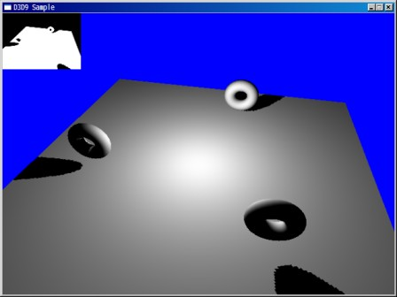

| TOP | weblog | TIPS | Works | リンク |
| 2013-02-25 Intel CPU の特性について（初心者向け） 誤解から無駄な買い物とかしない方が良いのに越したことはないので書いてみました。 (CPU使用率) Windowsのタスクマネージャーで見る事ができる「CPU使用率」について、何度か尋ねられた事があります。
誤解されている方が多いので少し解説してみたいと思います。 あるアプリ（ゲームやツール、なんでもよい）を稼働させて、使用率が１００％に近いからCPUの能力が不足しているわけではないのです。 「CPU使用率」の数値はCPU能力と全く関係ありません。 測定時間内にCPUがどれだけ「使用」されていたかを表示しているだけです。 単純な1ケタの足し算を１０億回繰り返すプログラムと、１０桁の難しい算術演算を１０億回プログラムのどちらを動かしてもCPU使用率はほぼ１００％付近をウロチョロします。 CPUの能力はこの１０億回の演算を完了するまでの時間で決まるのです。 下の動画はブルーレイの圧縮リッピング、ブルーレイのソフトウェアコーデックによる再生、YouTubeの再生の３つのアプリを同時に実行したものですがCPU使用率のグラフは１００％になっています。 でも、この３つのアプリはとどこうりなくスムースに動作しています。 動画が多少カクカクしているのはディスクトップ録画ソフトのレートを落としているせいで、実際は違和感なく再生出来ています。 ディスクアクセスやウィンドウ操作を行わない内部処理だけを行うアプリがあったとして、それを実行した場合、逆にCPU使用率が１００％近くならないといけないのです。 そうでなければ、そのプログラムにはCPUを開放してしまう欠陥がある事になります。 これはアプリケーションの動作確認テストの一つとして実際に行われることがあります。 (３DゲームのCPU依存度) ３Dゲームの場合、マイクロソフトが提唱しているDirectXのDirect3Dと言われるプログラムの命令群を利用しています。 非常に分かりずらい概念ですが、相当噛み砕いていうと、「ゲームのキャラクタを右斜め上40度に１０％移動しなさい」という命令が既に決められているみたいな感じ...相当強引。 実際は３Dコンピュータグラフィックの細かい技術に応じた命令が信じられないくらい沢山用意されている。 DirectXは命令の形を決めているだけであって、それを実行して最終的にディスプレイに表示するのはグラフィックボードが処理するのです。 グラフィックボードのパッケージに書いてあるでしょ「DirectX 11対応」とか。 ３Dコンピュータグラフィックに「動的全方位シャドウマッピング」というのがあって、「ここ」に実際の画像とプログラムのコードが書かれています。 見ても全然分からんけどね、「Deferred Rendering」と言う命令を使うらしい。 光源はどこにあってオブジェクトの形（下図ではドーナツ型）はどんなんで、その形の影はこんな風にできるはず的な事を計算して表示しています。 3DゲームはこういったDirectXを使ったプログラムで作成されていて、下図の様な画像をグリグリ動かすのは、実は「演算」していて１秒間に十数回表示しているのです。 ３Dの絵が動く仕掛けはアニメと似ているけど、アニメのセル画に相当するものはグラフィックカードが「演算」で作成してディスプレイに表示しています。 なので綺麗な画像（高い解像度）で沢山グリグリするゲームほどグラフィックカードにはとても高い演算処理能力が必要なのです。  ゲームの場合は動画がスムースに描画されないとかマウス、キーボードの反応が遅い、たとえばキャラの動きが鈍かったり、トリガを引いたのにマシンガンの発射が遅れたりとか、プレイに支障をきたす状態が「能力不足」と言えるでしょう。 (ネットワーク処理のCPU依存度) ３DゲームよりはるかにCPU依存度は低くなります。 ニコ生みたいなストリーミング配信やYouTubeのようなストリーミング受信＆再生は、Celeronだろうがｉ７だろうが性能差はゼロと考えてよいです。 むしろ、無線最適化やWIndowsのTCP/IP通信の最適化(MTUの調整)で変わります。 あとニコ生は程度の低いウェブカムだとカメラ－PC間でさえ遅延(レイテンシと言います)が発生します。 特にドライバの出来が悪い製品はひどいです。 Logicoolの少しハイエンド製品を選択した方が良いと思います。 無線LAN、無線Internet（EMOBILE、iPhone５テザリング）は性能測定を予定しています。 (速いCPUは熱い、マルチコアとTDP(設計最大方熱量)） IntelはWidowsが本格的に普及し始めたころに発売した「Pentium」からCPUの能力を向上させる基本技として動作クロックを上げて続けてきました。 CPUにははＴＤＰ(設計最大放熱量)と言う特性があり、クロック数が高いほど発熱量が高くなります。 すなわち発熱温度が高いってこと。 動作クロックはエンジンの回転数みたいなもんで、数値が高いほどCPUの能力が高い事になります。 (マルチコアは適応外ですので注意） しかしながらクロックを上げ続けた結果、発熱が製品として限界を迎えてしまい「Pentium」は「４」、「Pentium４」で終焉しました。 CPUファンの音がうるさいから処理能力の高いCPUにすると言うのは、真逆の間違ったとらえ方です。 マザーボードにはCPUの温度センサーが付いていて、高温になるとファンの回転数を上げる機能や、限界を超えると故障を防ぐためシャットダウンする機能があります。 勿論、この機能はオフにすることが出来るけど。 能力の高いＣＰＵになるほど熱対策への配慮が必要です。 IntelのCPUをBOXで購入するとヒートシンク＆ファンが付属してます。 多分CeleronからCore ｉ７まで同じもので、新品のファンは殆ど無音です。 ですが、このファンの寿命は１日８時間程度の稼働であれば２~３年で故障します。 大抵、ベアリングが劣化して異音が発生し、そのうち回転停止します。ＣＰＵファンは消耗品です。 発熱について、昔、自分でちょっとした実験を行ったことがあります。 別に性能を計測をするためではなくて、オークションに「Pentium４」（Prescottと言う世代）を出品するための動作確認テストです。 もともと「Celeron」を積んでいたパソコンでCPUを「Pentium４」を交換してテストします。 CPUを交換するには冷却用のヒートシンク（ファン付）を外さなければなりません。 ヒートシンク＆ファンを外しても「Celeron」はすんなり起動して、しばらく放置してもCPUは手で触れるほどの温度。
「Pentium４」の発熱がハンパなく、ヒートシンク＆ファン無しでは発熱しすぎて一切動作しないのです。 それを知らずして、電源オン！ 「Pentium４」は起動後１秒でフリーズ、CPUも電源ON直後でも火傷するほど１秒で約８０℃まで一気に高温になります。
クロックが上がるとこんなに凄まじく温度があがって、ヒートシンク＆ファンを付けないと正常に動作しないのですよ。 能力の高いCPUはヒートシンクやファンを小さく出来るとかファンの回転数を落とすことが出来るわけではありません。 アイドル時（なんもアプリを動かしていない状態でも）下位のCPUより熱いので、より冷却を配慮しないといけないのです。 ちなみに現行世代のCpre iシリーズはクアッドコア（４コア）ですが、次世代はオクタコア（８コア）になります。
(nVIDIA GeForceのリファレンス） nVIDIA（会社）はビデオカードの完成品を製造していません。（たぶん） 製造はGForceのGPUを使って台湾メーカーを中心に沢山のメーカーから発売しています。 ｎVIDIAはGeForceの「リファレンスデザイン」を出しています、いわゆる設計図ですな。 この「リファレンスデザイン」に基づく製品のみ認めており、独自の設計を認めていません。 ですからGeForceのチップとVRAMサイズが同じであれば、どのメーカーの製品でも理論上は性能は変わらないと言う事になります。 グラフィックチップ以外の電子部品や多層化ボードの品質や冷却性は異なり、価格差が発生している模様で、後はおまけソフトの有無やその内容で差別化を図っているのではないでしょうか？ (昔はビデオカードの会社が沢山あった） Windows95、98時代、マザーボードにグラフィック機能はなく（現世代はCPUにグラフィック機能を持っていて、マザーボードと連携してます）、自作パソコンを組む場合、必ずグラフィックボードを購入しなければなりませんでした。 覚えているだけメーカーを列挙してみよう、なつかしいなぁ。 3dfx 「Voodoo」(ブードゥー)と呼ばれる製品で一時代席巻した。今のｎVIDIAみたいな存在感で専用ゲームが沢山あったがATIのRADEON、nVIDIAのGeForceに敗れてnVIDIAに買収。 Matrox いまも存在している会社、これも一時期「Millennium」で人気があったが、ここ十年製品を見かけたことはない。 ちなみに私、MillenniumIIをまだ使ってます。 S3 Graphics 「ViRGE」と言うチップで何社かの国産PCに採用されていたと思います、VIAに買収。 VIA Technologies S3を買収したもののグラフィックボード単体の製品は（恐らく）無い。Intel互換の統合チップセットにビデオの技術がひきつがれている模様。 しかしながらVIAのチップセットもめっきり見かけることが少なくなった。 カノープス 社名を「グラスバレー」とし、PC周辺機器メーカーとして現存。 Ｓ３やnVIDIAのチップを使って「リファレンスデザイン」(重要、後述）を否定して高画質のビデオカードを独自設計していた頑固な会社。 ｎVIDIAは「リファレンスデザイン」を認めていないのでビデオカード事業から撤退。 S3を使った「PowerWindow」と言うビデオカードを持っています。 ATI Technologies 「RADEON」でnVIDIAの「GeForce」と戦い続けている。AMDに買収されたがブランドと製品はそのまま残っている。 ｎVIDIA ATIとのし烈な争いを展開中であるがゲーマーPCではアタマ３つくらい抜きんでた感じ。 GeForceが出る前まではATIの方が売れていたような気がする。 nVIDIAは今やグラフィックボードメーカーではありません。 Intelと並び汎用プロセッサメーカーですね。 世界最速の富士通 スーパーコンピュータのCPUも「GeForce」だし。 スマホやAndroidタブレットでもCPU「Tegra」が採用されていますしね。 Intelと同じで製品の供給責任のあるメーカーになってしまったから、製品開発は留まることはありません状態。 |